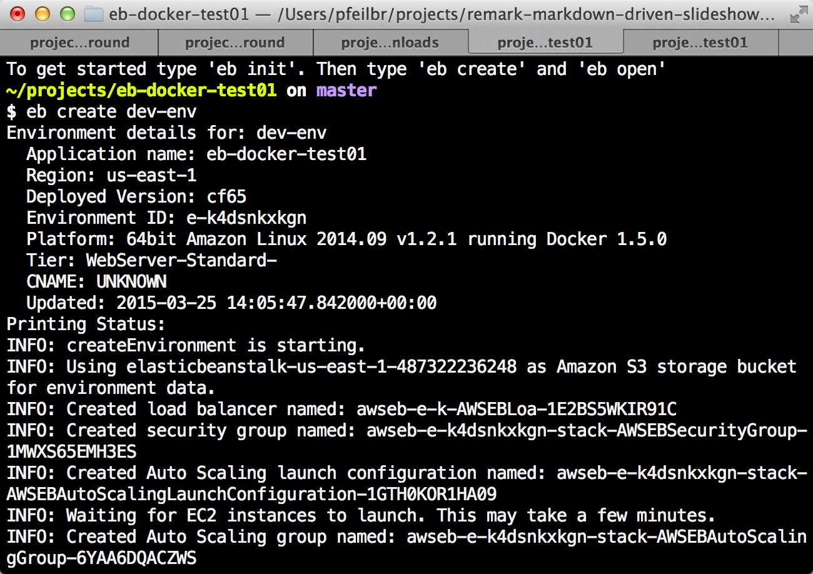
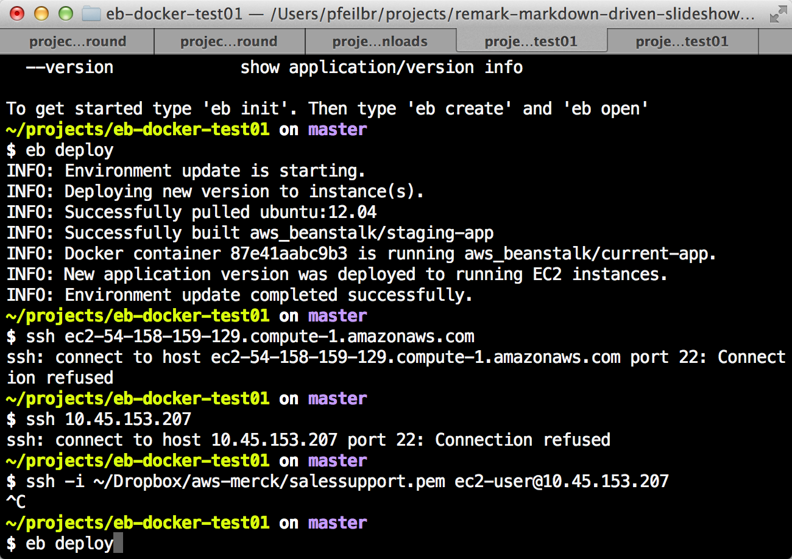
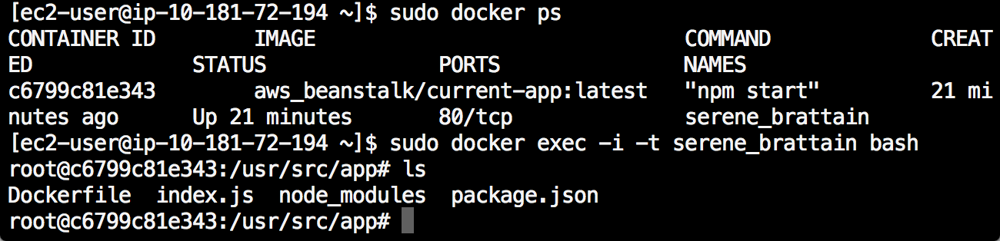

Dockerized Node.js App on Elastic Beanstalk Example
Example of developing and deploying a dockerized Node.js app to Elastic Beanstalk
source on Github at pfeilbr/Elastic-Beanstalk-Docker-Node.js-Example
Local Development Workflow
-
Edit code. e.g.
index.js -
Build image
$ docker build --tag="pfeilbr/eb-docker-node-example" .``
-
Run
$ docker run -p 80:80 -it -rm -name eb-docker-node-example pfeilbr/eb-docker-node-example``
-
Get docker host ip (optional. only if using boot2docker)
$ boot2docker ip``
-
Open browser to
http://<boot2docker ip>
Initial Deployment
-
Init git repo
$ git init .``
-
Add files to repo
$ git add .``
-
Commit changes
$ git commit -m "init"``
-
Create eb app
$ eb init # populate details``
Populate all details
-
Create environment for app
$ eb create dev-env``
IMPORTANT Must immediately update the ec2 instance with tags so it doesn’t get terminated. Enable termination protection on the ec2 instance.
Output

Deploying Updates
-
Modify code and test via [Local Development Workflow]
-
Commit changes
$ git commit -a -m "my updates"``
-
Deploy to eb
$ eb deploy``
NOTE: Takes between 3-5 min to deploy changes
Output

Establish Interactive Bash Shell in Running Docker Container
-
ssh into ec2 docker host server
$ eb ssh``
-
Get container name
$ sudo docker ps # save off name of container``
-
Connect/attach with an interactive bash session
$ sudo docker exec -i -t <container name> bash``
Example Session with Output
